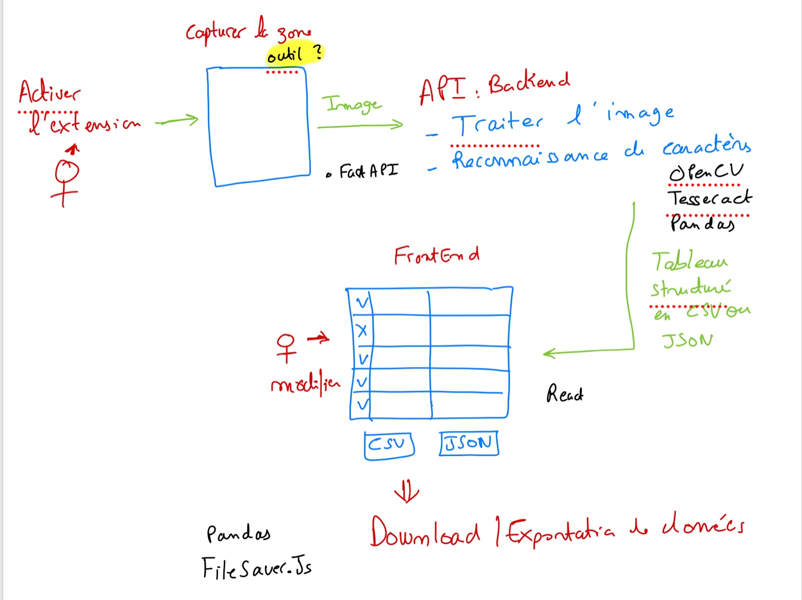
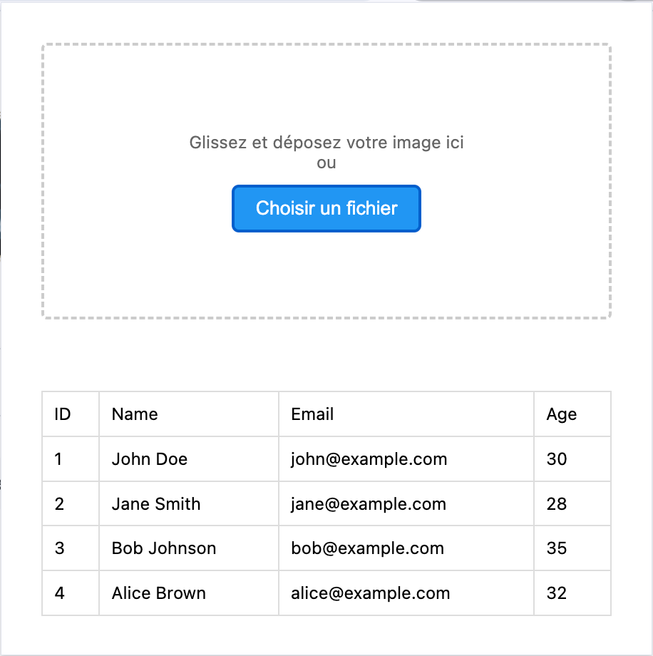
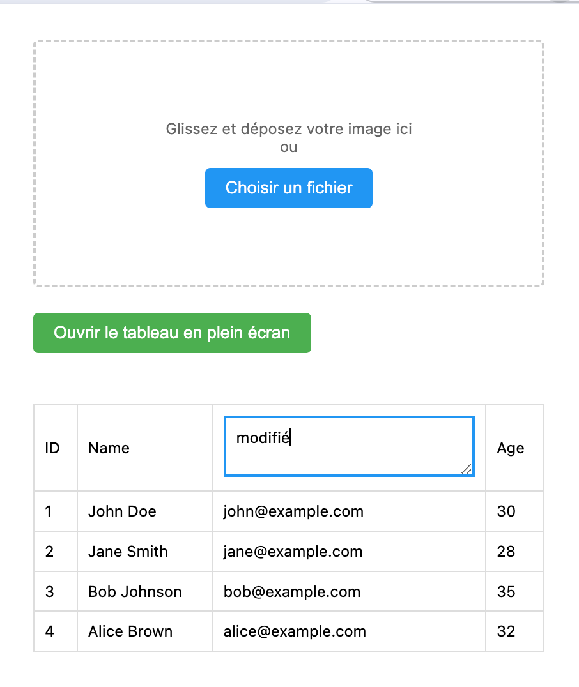
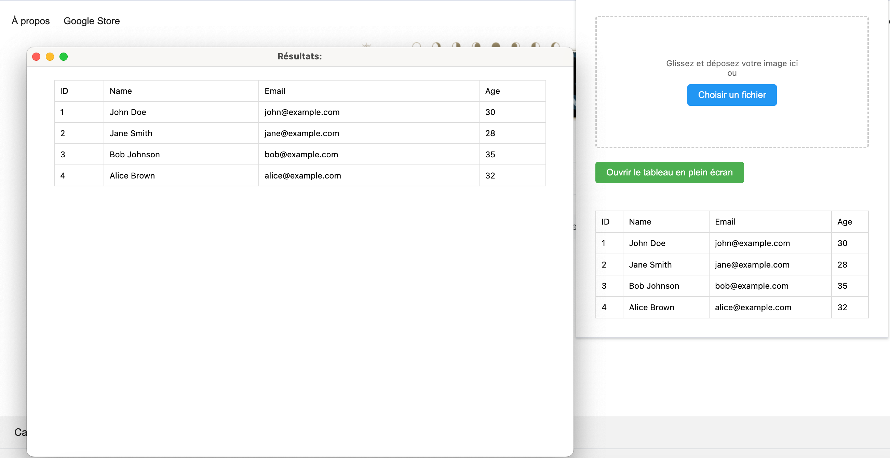
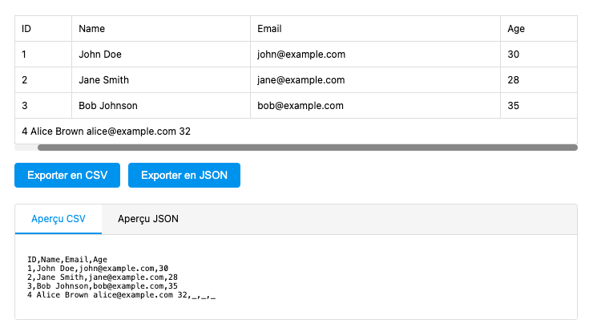

Description du projet
Avec l'évolution du web et l'abondance d'informations disponibles, il est devenu essentiel pour les utilisateurs de pouvoir extraire et traiter des données tabulaires rapidement. Les tableaux intégrés dans les pages web peuvent être affichés de différentes manières : certains sont directement codés en HTML, tandis que d'autres peuvent être intégrés sous forme d'images ou générés dynamiquement par JavaScript. Cette diversité rend l'utilisation d'outils de parsing traditionnels difficile et souvent inefficace.
Les utilisateurs se retrouvent souvent à copier manuellement des tableaux à partir de sites web ou à devoir transcrire des données à partir de captures d'écran, ce qui est fastidieux et sujet à des erreurs. Il n'existe pas d'outil accessible et intuitif permettant à la fois d'extraire ces données rapidement et de les personnaliser selon les besoins. De plus, bien que certaines solutions existent pour l'extraction de données tabulaires, elles sont souvent complexes, incomplètes ou limités dans leur flexibilité, rendant l'expérience utilisateur peu agréable.
Picky est une extension de navigateur web conçue pour faciliter l'extraction de données tabulaires. Elle prend en charge la conversion de tableaux (provenant de captures d'écran) présents sur une page web en divers formats d'export, tels que CSV ou JSON. Les données extraites peuvent être filtrées ou modifiées pour plus de flexibilité et une meilleure interopérabilité avec les clients potentiels. Picky utilise des techniques de traitement d'image pour améliorer la précision et la qualité des résultats.
Exigences
Besoins fonctionnels:
- Extraction de tableaux depuis une page web :
- L'utilisateur doit pouvoir sélectionner un tableau à partir de l'interface de la page web pour l'extraction. Pour faciliter cette extraction, L'extension utilise l'outil html2canvas qui permet de sélectionner et capturer la zone souhaitée dans la page web.
- Import d'images de tableaux :
- L'utilisateur doit pouvoir télécharger directement une image contenant un tableau depuis son ordinateur pour en extraire les données.
- Prétraitement des images :
- L'application doit inclure un prétraitement d'image pour assurer une meilleure lisibilité des données capturées. OpenCV est utilisé pour ce prétraitement, permettant d'améliorer la qualité de l'image, d'ajuster le contraste et de détecter les bordures du tableau.
- Reconnaissance et extraction des données :
- Une fois l'image prétraitée, Tesseract est utilisé pour la reconnaissance optique des caractères (OCR).
- Modification des données extraites :
- Une interface doit permettre de modifier facilement les données extraites (supprimer ou modifier les lignes/colonnes).
- Exportation flexible :
- Les données modifiées ou filtrées doivent pouvoir être exportées dans différents formats, tels que CSV et JSON.
- Gestion des formats de tableaux divers :
- L'extension doit être capable de traiter plusieurs types de tableaux HTML, y compris ceux avec des styles personnalisés ou des structures imbriquées.
Besoins Non Fonctionnels :
- Performance et rapidité :
- L'extension doit fonctionner rapidement.
- Facilité d'utilisation :
- Aucune compétence technique ne doit être requise pour utiliser l'extension. L'interface doit être simple et intuitive, permettant à l'utilisateur de gérer toutes les fonctionnalités (sélection, modification, exportation) sans difficulté.
- Un système d'aperçu des données doit être proposé avant l'exportation.
- Maintenance et évolutivité :
- Le projet doit être conçu de manière modulaire, facilitant l'ajout de nouvelles fonctionnalités ou l'intégration avec d'autres systèmes à l'avenir sans nécessiter de changements importants dans l'architecture existante.
Infrastructure
- Backend: Le backend de l'application est développé en Python, utilisant le framework FastAPI pour la création du REST API.
- Frontend: Le frontend de l'application est développé en HTML, CSS et JavaScript permettant une interface utilisateur interactive et réactive.
- Traitement d'image et extraction des données: Le traitement d'image et l'extraction des données sont réalisés en utilisant les bibliothèques OpenCV et Tesseract.
- Manipulation des données: La manipulation des données extraites est effectuée en utilisant la bibliothèque Numpy, permettant un traitement efficace des données tabulaires.
Rapport d'avancement
Semaine 1 –
Ouverture de projet & Élaboration des exigences
Objectifs
- Prendre en main les outils qui seront utilisés pour le projet
- Produire une première version de l'échéancier
- Déterminer les exigences du projet
- Étudier le domaine, les notions et outils envisagés pour le projet
Réalisations
- Introduction du projet
- Rédaction d'une description détaillée du projet: Voir ci haut
- Étude des solutions déjà présentes sur le marché et qui ressemblent à notre projet pour évaluer la valeur ajoutée:
- Table Capture: extension web qui traite le code html de la page pour extraire le tableau
Limitation: ne fonctionne pas avec les tableaux générés dynamiquement par JavaScript ou bien par la manipulation du CSS - Web Scraper: extension web
Limitation: Requiert une configuration plus complexe et n'offre pas une interface simple pour la sélection de données spécifiques. - Tabula: application desktop
Limitation: Fonctionne uniquement avec des fichiers PDF, pas directement avec des pages web ou des captures d'écran.
- Table Capture: extension web qui traite le code html de la page pour extraire le tableau
- Recherche et analyse des technologies que l'on peut utiliser dans la réalisation du projet: Découvrir les outils qu'on peut utiliser et tester
Notes
Semaine 2 –
Analyse des exigences & 1ère architecture du projet
Objectifs
- Finaliser les exigences du projet
- Élaborer une première architecture du projet
Réalisations
- Besoins fonctionnelles et non fonctionnelles: Voir ci haut
- Élaboration de la première architecture du projet
 - Continuer l'étude des outils et technologies qu'on va utiliser dans le projet:
- Fast API, OpenCV, Tesseract, Pandas, React...
Notes
L'architecture du projet que je viens de définir n'est pas figée. Elle servira de base pour commencer le travail, et nous continuerons à la raffiner ou la modifier au fur et à mesure de l'avancement du projet.
J'ai également commencé à réfléchir à l'interface utilisateur (UI).
Semaine 3 –
Analyse des outils de capture d'écran & Démarrage du backend & Développement d'une extension "Hello World"
Objectifs
- Étudier les outils de capture d'écran
- Démarrer le développement du backend
- Créer une extension "Hello World" pour tester et découvrir comment ça marche
Réalisations
- Création d'une extension "hello world" et test sur chrome extensions en utilisant le "developer mode"
- Étude des outils de capture d'écran:
- html2canvas : C'est une bibliothèque JavaScript qui permet de capturer le contenu d'une page web en le "dessinant" sur un canvas HTML5 (càd elle manipule du contenu html et css).J'ai créé une page de démonstration pour tester cette technique sur différents types de tableaux: des tableaux HTML et des tableaux sous forme d'image. Bien qu'efficace dans de nombreux cas, html2canvas présente quelques limitations, notamment avec le contenu généré dynamiquement avec Js et les images hébergées sur des domaines externes (je ne suis pas arrivé à reproduire ces cas limites mais j'ai cherché en ligne et j'ai trouvé qu'ils existent).
- Autres méthodes : do-to-image, API de capture d'écran sur Chrome et d'autres projets random sur github. Ces alternatives se sont avérées soit incomplètes, soit nécessitant des permissions supplémentaires, ce qui pourrait nuire à l'expérience utilisateur.
Notes
Je n'ai pas vraiment commencé le développement du backend, car j'ai passé la majorité de mon temps à tester et évaluer les différents outils de capture d'écran. Cependant, je me suis un peu familiarisé avec FastAPI, j'ai étudié sa documentation, réalisé quelques tutoriels de base, et commencé à planifier la structure de notre API.
Semaine 4 et 5–
Script du traitement d'image
Objectifs
- Commencer par apprendre les outils qu'on va utiliser du côté serveur pour faire le traitement d'image
- Créer un script qui prend un tableau en image en entrée et renvoie un array 2D
- Penser au UI: Est-ce qu'on a vraiment besoin d'utiliser React? et comment on va placer l'extension dans la page web?
Réalisations
-
Commencer par apprendre les outils qu'on va utiliser du côté serveur pour faire le traitement d'image.
- OpenCV: C'est une bibliothèque open source de vision par ordinateur et de traitement d'image. Elle fournit des outils pour manipuler des images et des vidéos. J'ai commencé à apprendre les bases de OpenCV et à réaliser quelques tutoriels pour me familiariser avec les fonctionnalités de base.
- Tesseract: C'est un moteur de reconnaissance optique de caractères (OCR) open source. Il permet de convertir des images de texte en texte brut. J'ai également commencé à apprendre les bases de Tesseract et à réaliser quelques tutoriels pour comprendre comment il fonctionne.
- Créer un script qui prend en entrée une image d'un tableau et renvoie un array 2D: C'est une première version du script qui prend une image en entrée, la traite avec OpenCV et Tesseract, et renvoie un array 2D représentant le tableau extrait. J'ai réalisé quelques tests avec des images de tableaux simples.
Notes
Cette première version du script marche bien dans la plupart des images de tests, mais jusqu'à maintenant on 2 problèmes:
- La fonction findContours retourne aussi le contour externe du tableau donc il faut trouver une fonction qui filtre ces contours et élimine les conteurs externes, j'ai jusqu'à maintenant 3 solutions à discuter:
- skip le premier contours à l'index i=0 car il est le contour externe le plus grand. Elle fonctionne dans notre cas car avec RETR_TREE les contours sont organisés dans une hiérarchie parent-enfant basée sur leur imbrication dans l'image (Il se peut que cette méthode ne marche pas bien si on a beacoup de tableau imbriqué dans l'image)
- faire un seuil des cases, par exemple 1000 < area de la case < 5000. C'est presque hardcoded car il se peut qu'on ait un tableau plus petit ou plus grand
- trier les contours dans l'ordre croissant de leur area et supprimer le plus grand car dans ce cas on est sur qu'il est le conteur externe - Problème de detection des 3 premieres cases dans test.png
Semaine 6 et 7–
Amélioration du script du traitement d'image
Objectifs
- Régler le problème de area > 5000 qui dépend de la taille des cellules du tableau: il faut trouver une façon de généraliser ça sur n'importe quel tableau.
- Régler le problème du seuil pour passer à la prochaine ligne dans le tableau: on a 20 pixels mais il faut generaliser.
- Régler le problème des 3 premières cases qui ne se détectent pas dans l'image test.png
- Faire des tests diversifiés.
Réalisations
- Régler le problème de area > 5000 qui dépend de la taille des cellules du tableau: j'ai trouvé une solution qui se base sur la hierarchie du tableau.
cv2.findContours(dilated, cv2.RETR_TREE, cv2.CHAIN_APPROX_SIMPLE) retourne la hiérarchie du tableau en considérant que le grand contour externe du tableau est le parent de toutes les autres cases. On détecte ce contour et après on filtre les contours détectés en laissant seulement les contours enfants directs de ce contour, et on sait bien que ces contours forment les cases de notre tableau.
On applique un filtre de w > 10 and h > 10 car il se peut qu'il y ait du bruit comme des pixels qui semblent être des contours à cause du contraste ou tout autre problème.
Les contours restants sont des cases non valides (soit du texte ou du bruit qui sont imbriqués au 2ème niveau). - Régler le problème du seuil pour passer à la prochaine ligne dans le tableau: j'ai créé une fonction resize_image qui consiste à généraliser la forme des images avec une largeur de 2000 pixels. La hauteur sera calculée selon la proportion dans l'image originale pour préserver les proportions. Donc maintenant on sait bien qu'on a au moins 20 pixels entre chaque ligne.
- Régler le problème des 3 premières cases qui ne se détectent pas dans l'image test.png: Ce problème est causé par la qualité de l'image qui est un peu flou, après avoir resize l'image avec une interpolation cv2.INTER_AREA, ce problème n'apparait plus car le contraste augmente un peu.
Notes
Resize_image a causé un autre problème dans le cas des images très petites : quand on les agrandit, le contraste élevé crée du bruit dans les images et crée des problèmes dans la détection du texte. J'ai rencontré ce problème dans une seule image. Je vais chercher une solution à ça après.
Semaine 8 –
Amélioration du script du traitement d'image et ajout d'un script de validation d'image
Objectifs
- Trouver les grandeurs minimales de l'image pour garantir qu'on peut la traiter.
- Trouver un gold number sur lequel on divise la hauteur de l'image et on obtient le nombre de pixels entre chaque ligne du tableau.
- Créer un script de validation d'image qui prend une image en entrée et renvoie si c'est une image valide ou non:
- Si l'image contient vraiment un tableau.
- Si l'image ne contient pas 2 tableaux au même temps.
- ...
Réalisations
- J'ai abandonné l'idée de redimensionner toutes les images à une largeur/hauteur cible, maintenant je calcule l'aire de l'image et je calcule un facteur d'échelle avec lequel je fais le produit pour calculer mes nouvelles largeur/hauteur pour garder les mêmes proportions.
- J'ai ajouté une fonction get_seuils qui calcul le seuil minimum pour les cellules (environ 0.5% de la largeur/hauteur) et le seuil minimum pour passer à la nouvelle ligne (environ 0.1% de la hauteur). Ce sont nos "gold number".
- J'ai créé un script de validation d'image qui prend une image en entrée et renvoie si c'est une image valide ou non. Je commence par détecter si l'image contient des contours et une hierarchie ou non. Puis je filtre ces contours pour extraire le nombre de contours candidats qui peuvent représenter un tableau. Si le nombre est 0 ou > 1 alors l'image est invalide car soit elle ne contient aucun tableau valide soit elle contient plus qu'un tableau. La fonction validate retourne un commentaire qu'on va afficher à l'utilisateur.
Notes
Pour les grandeurs minimales d'image. Je ne trouve pas de grandeurs qu'on peut exiger, car on a des cas où on peut avoir un tableau d'une seule ligne ou une seule colonne, qu'on peut traiter. Et si jamais l'utilisateur fournit une image très petite, elle ne va pas passer tous les filtres de validation et elle ne sera pas accéptée.
Semaine 9 –
Première version de l'extension
Objectifs
- Créer une première version de l'extension qui permet d'upload une image ou drag and drop l'image dans l'extension
- L'image est envoyé au backend pour faire la validation: Si l'image n'est pas valide, on retourne un message d'erreur clair et détaillé.
- Si l'image est valide, on la traite et on retourne les données extraites.
- Afficher les données dans un tableau dans l'extension.
Réalisations
- Création de l'extension avec HTML, CSS et JavaScript.
- Création de l'interface utilisateur de l'extension.
 - Intégration de l'API de validation d'image dans l'extension.
- Intégration de l'API de traitement d'image dans l'extension.
- Affichage des données extraites dans un tableau dans l'extension.
Notes
J'ai également travaillé sur le script de l'extraction du tableau pour trouver une solution au cas extrême où la bordure externe du tableau n'est pas capturée dans l'image. La solution que j'ai trouvé est d'extraire la grille du tableau d'abord, l'afficher à l'utilisateur et ajouter la fonctionnalité d'étendre la bordure externe du tableau s'il veut ajouter d'autres cases qui n'étaient pas capturées. Cela permer à l'utilisateur d'aider l'outil à faire son travail et de corriger les erreurs potentielles de la détection de la grille avant de commencer l'extraction du texte.
Semaine 10 –
2ème version de l'extension: Permettre la modification du tableau affiché
Objectifs
- Permettre à l'utilisateur de modifier le tableau affiché dans l'extension.
- Ajouter des fonctionnalités d'édition de tableau: Supprimer des lignes et des colonnes, modifier le contenu des cellules.
- Trouver une solution au cas où le tableau extrait est très grand: popup dynamique ou aller dans une autre fenêtre dans le navigateur.
- Fixer le code js qui transforme un array 2d en un code HTML d'un tableau.
Réalisations
- Permettre à l'utilisateur de modifier le tableau affiché dans l'extension.
 - Popup dynamique pour les tableaux très grands.
- Ajout d'un bouton pour ouvrir le tableau dans une nouvelle fenêtre.
 - Fixer le code js qui transforme un array 2d en un code HTML d'un tableau.
Notes
Je n'ai pas encore implémenté la fonctionnalité de suppression des lignes/colonnes. Nous rencontrons un problème avec les tableaux contenant des cellules merged : notre code de transformation d'un tableau 2D en HTML ne détecte pas ces cellules. Il crée donc des lignes avec un nombre de cellules différent, ce qui rend impossible la suppression des lignes/colonnes puisque le nombre de cellules varie selon les lignes.
Solution: Prendre le nb de cases max dans une ligne. Dans les lignes avec des cellules merged: remplir les x premieres cellules puis laisser les autres cellules (max - x) vides pour que toutes les lignes aient le même nombre de cellules.
Semaine 11 –
3ème version de l'extension: Exporter les données & Merge & Supprimer ligne/colonne
Objectifs
- Ajouter l'édition du tableau en plein écran.
- Cacher ou griser le tableau dans le popup quand on ouvre le tableau en plein écran.
- Ajouter l'exportation en csv et json.
- Ajouter la possibilité de merge des cellules horizontalement.
- Ajouter fonctionnalité de supprimer ligne/colonne.
Réalisations
- Ajout de l'édition du tableau en plein écran.
- Pour passer les données du mode popup au mode nouvelle fenêtre, on stocke le tableau dans chrome.storage.local qu'on va récupérer et afficher avec showResults.
- Cacher ou griser le tableau dans le popup quand on ouvre le tableau en plein écran.
- Ajout de l'exportation en csv et json.
- Ajout de la possibilité de merge des cellules horizontalement
- Ajout de la fonctionnalité de supprimer ligne/colonne.
Notes
Le merge ne se fait pas réellement au niveau des données, mais plutôt sur une couche de présentation qui est liée à la couche de données. Cela permet de préserver l'intégrité des données tout en offrant une flexibilité dans la présentation. Lors de l'exportation, seules les données brutes sont prises en compte.
Dans notre tableData qui contient le vrai tableau, on met "_" dans la cellule fusionnée pour signifier qu'elle est merged avec celle d'avant, afin de garder le même nombre de cellules dans chaque ligne. On va l'exporter tel quel en CSV (inspiré par l'exportation sur Microsoft Excel), mais en JSON, on ignore les "_".
Semaine 12 –
4éme version de l'extension: Intégration de html2canvas
Objectifs
- Intégrer html2canvas pour capturer le tableau dans la page web.
- Permettre à l'utilisateur de sélectionner le tableau à extraire à partir d'une page web.
- Corriger le bug de suppression des colonnes après avoir fait une fusion.
- Ajouter la fonctionnalité d'aperçu des données avant de les extraire.
Réalisations
- Intégration de html2canvas pour capturer le tableau dans la page web.
- L'utilisateur peut maintenant sélectionner le tableau à extraire à partir d'une page web.
- Corriger le bug de suppression des colonnes après avoir fait une fusion. La manipulation se fait encore une fois dans tableData et on appelle showResults après. Si on supprime une colonne on parcourt cette colonne dans tableData: si la cellule est "_" càd merged avec une autre donc on peut la supprimer, mais si on trouve un string valide dans la cellule alors on check si la suivante est merged avec elle (contient "_") dans ce cas on transfère le texte de la cellule qu'on veut supprimer à la cellule suivante, sinon on supprime simplement la cellule.
- Ajout de la fonctionnalité d'aperçu des données avant de les extraire.
- L'apperçu est en temps réel, donc chaque modification dans le tableau est reflétée dans l'aperçu pour avoir une idée comment les données seront exportées.
- On utilise des onglets "CSV" et "JSON" qui permettent à l'utilisateur de basculer facilement entre les 2 aperçus.

Notes
Pour ajouter la fonctionnalité de capture, on injecte le code de html2canvas (capture.js) dans la page web. Après la capture, on stocke l'image dans le chrome storage afin de pouvoir rouvrir l'extension et effectuer processImage.
Semaine 13 –
Rapport du projet
Objectifs
- Rédiger le rapport du projet.
- Finaliser la documentation.
- Préparer la présentation du projet.
Réalisations
- Rédaction du rapport du projet.
- Finalisation de la documentation.
- Préparation de la présentation du projet.